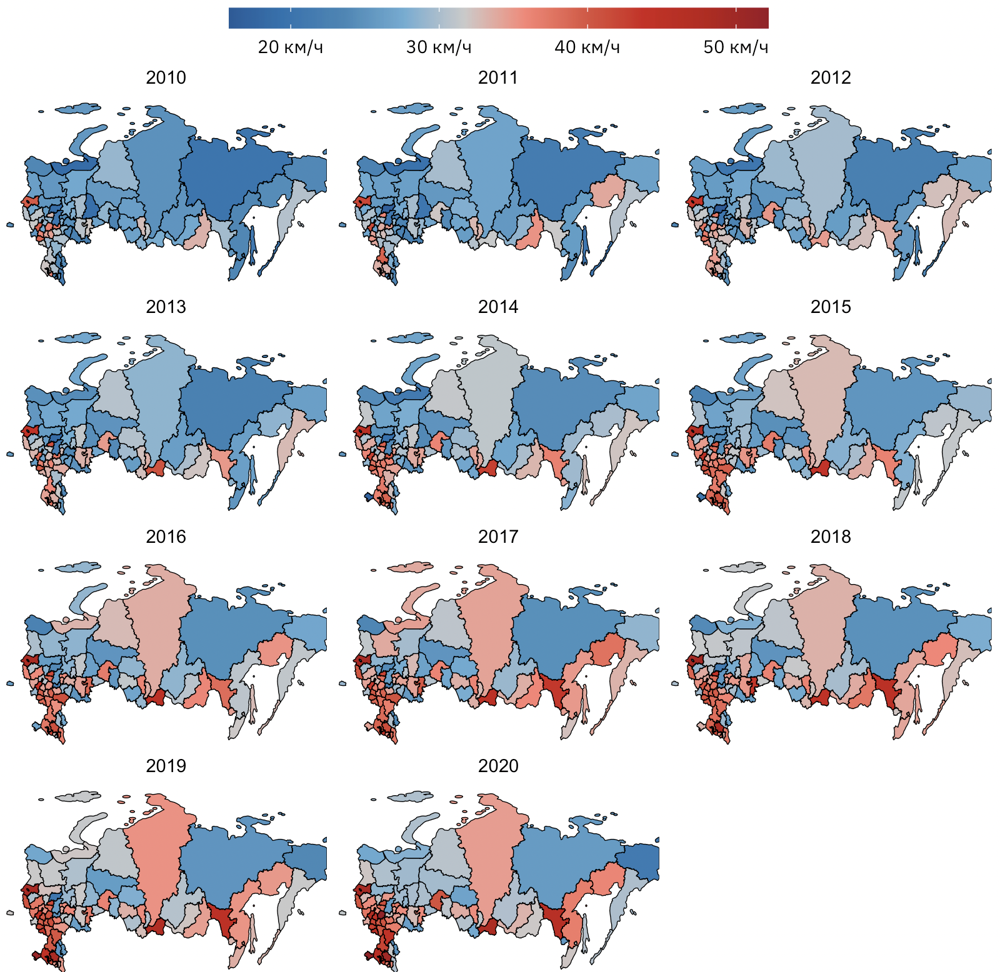

![]()
Аннотация
Мы исследуем в статье средние показатели за 10 лет: с 2010 по 2020 год. В работе дана общая краткая характеристика величин, рассмотрено распределение … с учетом региональных особенностей и более подробно сделано исследование … с учетом географического положения. В конце работы приведен пример построения простейшей модели машинного обучения для возможного прогнозирования.
Введение
В настоящее время большое внимание уделяется повышению эффективности деятельности … на основе современных алгоритмов науки о данных, новых научно-методических подходах, использования геоинформационных систем для решения сложных задач [1, с. 560–570]. Одной из задач такого рода является расчет …, исходя из требований статьи 11 123-ФЗ [2] на основе современных технологий. Напомним, что …
Теоретическая основа и практические подходы для решения задачи размещения решались в НИР «…», выполнявшейся в 2022 году [3]. Ключевым подходом являлась реализация алгоритмов оптимизации на основе теории … на языке программирования Python с последующей визуализацией результата в QGIS – свободной кроссплатформенной геоинформационной системе.
В качестве исходных данных указанной выше НИР для реализации алгоритмов выступают средние показателей на основе практических наблюдений, как, например, в [4] и статистических данных.
1 Методология исследования
1.1 Исходные данные
Данная статья посвящена обобщению информации по … на основе почти 10-летней статистики. В настоящее время …, однако настоящее исследование не потеряло актуальности.
1.2 Методы анализа
Анализ исходных данных проводился с использованием с помощью языка программирования R [5–8]. Основным инструментом для работы в R в данной работе является набор библиотек, основанный на tidyverse – коллекции пакетов, объединенных общей базовой философией проектирования, грамматикой и структурой данных. В первую очередь мы используем библиотеку dplyr для работы с табличными данными, ggplot2 для визуализации данных путем добавления новых слоев. Для диагностики данных на основе основных статистических тестов применялась библиотека ggstatsplot. Кроме того, работа с географическими данными с учетом CRS-проекций осуществлялась в библиотеке sf, а картографическая подложка дорожной сети была сделана на основе OpenStreetMap-данных. Моделирование осуществлялось в современной библиотеке tidymodels, учет географических особенностей данных для кросс-валидации основан на работе в библиотеке spatialsample.
2 Результаты
2.1 Средние показатели
Рассмотрим таблицы и графики, отражающие различные распределения показателей. Отметим, что за исследуемый промежуток времени общее суммарное значение показателя составило 33 286 424. Найдем суммарные показатели по различным категориям. Как видно из таблицы ниже, более половины значений приходится на сельские населенные пункты.
| тип населенного пункта | показатель | процент | |
|---|---|---|---|
| 1 | Сельский населенный пункт | 17 756 913 | 53,35% |
| 2 | Город | 11 240 888 | 33,77% |
| 3 | Вне территории населенного пункта | 2 835 312 | 8,52% |
| 4 | Населенный пункт городского типа | 1 346 053 | 4,04% |
| 5 | Станция | 68 661 | 0,21% |
| 6 | Вахтовый поселок | 15 773 | 0,05% |
| 7 | Жилой поселок при станции | 11 391 | 0,03% |
| 8 | Разъезд, перегон | 10 580 | 0,03% |
| 9 | не указан | 853 | 0,00% |

Пример кода:
linear_reg() |>
set_engine("keras")
#> Linear Regression Model Specification (regression)
#>
#> Computational engine: keras3 Обсуждение
Из полученных результатов можно сделать следующие выводы: …
Заключение
В работе были кратко рассмотрены статистические данные по некоторым основным параметрам, характеризующим …
Обратите внимание, что в нижней части содержания HTML-страницы имеется ссылка на MS Word документ в разделе «Другие форматы». MS Word-документ рендерится автоматически благодаря шаблону с соответствующими стилями и соответствующему указанию в YAML-преамбуле в Quarto версии >1.3, как это описано на странице.